Overview
exnexSurv fits Bayesian pooling models for
right-censored log-normal data: the EXNEX hierarchy
(pooling = "exnex", the default), complete pooling
(pooling = "complete"), and no pooling
(pooling = "none"). See the Model and Methods
vignette for details. The current interface supports:
- a formula interface,
- an
x/yinterface, - subgroup effects,
- optional covariates,
- posterior draws for
theta_j,beta, andsigma2.
Simulate a simple dataset
library(exnexSurv)
library(survival)
simulate_surv_data <- function(
theta,
sigma2,
beta = NULL,
n_per_group = 50,
censor_min = 4,
censor_max = 12,
seed = NULL
) {
if (!is.null(seed)) {
set.seed(seed)
}
groups <- rep(seq_along(theta), each = n_per_group)
age_std <- rnorm(length(groups), mean = 0, sd = 1)
mean_log_time <- rep(theta, each = n_per_group)
if (!is.null(beta)) {
mean_log_time <- mean_log_time + beta * age_std
}
log_time <- rnorm(length(groups), mean = mean_log_time, sd = sqrt(sigma2))
true_time <- exp(log_time)
censor_time <- runif(length(groups), min = censor_min, max = censor_max)
data.frame(
time = pmin(true_time, censor_time),
event = as.integer(true_time <= censor_time),
group = factor(groups),
age_std = age_std
)
}
sim_data <- simulate_surv_data(
theta = c(1.1, 1.6, 2.0),
sigma2 = 0.25,
beta = -0.30,
n_per_group = 50,
seed = 6421
)
head(sim_data)
#> time event group age_std
#> 1 3.339087 1 1 0.6071040
#> 2 3.330683 1 1 -1.1474496
#> 3 2.469950 1 1 -0.5987154
#> 4 4.277826 1 1 -1.6561367
#> 5 2.422691 1 1 0.8235441
#> 6 2.831290 1 1 0.5040783
mean(sim_data$event)
#> [1] 0.7866667Fit the model with a formula
fit_formula <- pooling_surv(
Surv(time, event) ~ group + age_std,
data = sim_data,
iter = 1200,
warmup = 400,
chains = 1,
seed = 6421
)
print(fit_formula, show_trace = FALSE)
#> <pooling_surv model>
#> Pooling: exnex
#> Draws: 800 total post-warmup samples
#> 800 post-warmup samples per chain
#> Groups: 3 | Covariates: 1
#> MCMC: iter = 1200 , warmup = 400 , thin = 1 , chains = 1
#>
#> parameter mean sd q05 q50 q95 rhat
#> theta_1 0.9861505 0.06849275 0.8788059 0.9862140 1.0958766 0.9993574
#> theta_2 1.5326028 0.07082872 1.4121900 1.5318814 1.6524219 0.9990455
#> theta_3 1.9841454 0.07555761 1.8632978 1.9833107 2.1082712 1.0055107
#> beta_1 -0.3075793 0.04281121 -0.3797194 -0.3074616 -0.2362734 1.0084968
#> sigma2 0.2347691 0.03216346 0.1856459 0.2331866 0.2883242 1.0003663
#> ess_bulk ess_tail
#> 768.5948 597.2774
#> 459.6751 582.4569
#> 451.6547 533.8496
#> 321.3371 497.4946
#> 553.2356 727.2810
#>
#> Convergence: max R-hat = 1.01 | min ESS = 321.3
summary(fit_formula)
#> parameter mean sd q05 q50 q95 rhat
#> 1 theta_1 0.9861505 0.06849275 0.8788059 0.9862140 1.0958766 0.9993574
#> 2 theta_2 1.5326028 0.07082872 1.4121900 1.5318814 1.6524219 0.9990455
#> 3 theta_3 1.9841454 0.07555761 1.8632978 1.9833107 2.1082712 1.0055107
#> 4 beta_1 -0.3075793 0.04281121 -0.3797194 -0.3074616 -0.2362734 1.0084968
#> 5 sigma2 0.2347691 0.03216346 0.1856459 0.2331866 0.2883242 1.0003663
#> ess_bulk ess_tail
#> 1 768.5948 597.2774
#> 2 459.6751 582.4569
#> 3 451.6547 533.8496
#> 4 321.3371 497.4946
#> 5 553.2356 727.2810The fitted object stores the processed data, posterior draws, and MCMC settings. You can inspect the model structure with the usual S3 methods.
Run multiple chains in parallel
fit_parallel <- pooling_surv(
Surv(time, event) ~ group + age_std,
data = sim_data,
iter = 1200,
warmup = 400,
chains = 2,
parallel_chains = TRUE,
seed = 6421
)
print(fit_parallel, show_trace = FALSE)
#> <pooling_surv model>
#> Pooling: exnex
#> Draws: 1600 total post-warmup samples
#> 800 post-warmup samples per chain
#> Groups: 3 | Covariates: 1
#> MCMC: iter = 1200 , warmup = 400 , thin = 1 , chains = 2
#>
#> parameter mean sd q05 q50 q95 rhat
#> theta_1 0.9870040 0.06958675 0.8748666 0.9858982 1.0979172 0.9995272
#> theta_2 1.5334538 0.07136513 1.4126375 1.5335034 1.6516964 0.9997952
#> theta_3 1.9815311 0.07540195 1.8590322 1.9798331 2.1025855 1.0005217
#> beta_1 -0.3047351 0.04333179 -0.3782277 -0.3047538 -0.2341006 1.0038610
#> sigma2 0.2337765 0.03210020 0.1862492 0.2316788 0.2892194 1.0002698
#> ess_bulk ess_tail
#> 1615.809 1334.522
#> 1062.443 1235.490
#> 929.403 1270.271
#> 855.130 1209.172
#> 1078.190 1459.379
#>
#> Convergence: max R-hat = 1 | min ESS = 855.1
plot(
fit_parallel,
parameters = c("theta_1", "theta_2", "theta_3", "beta_1", "sigma2"),
ask = FALSE
)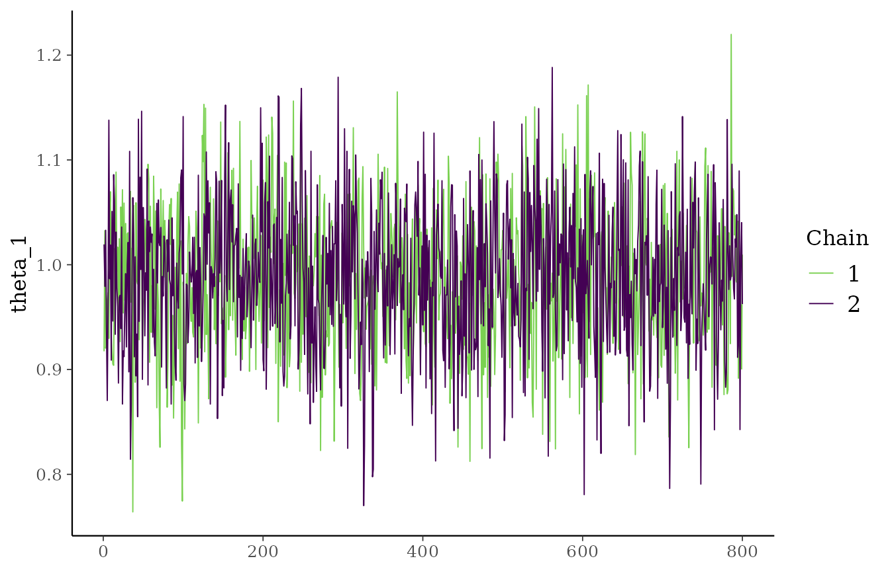
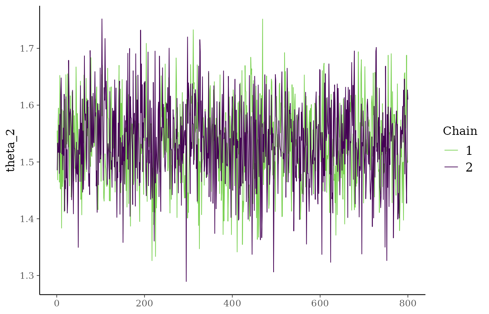
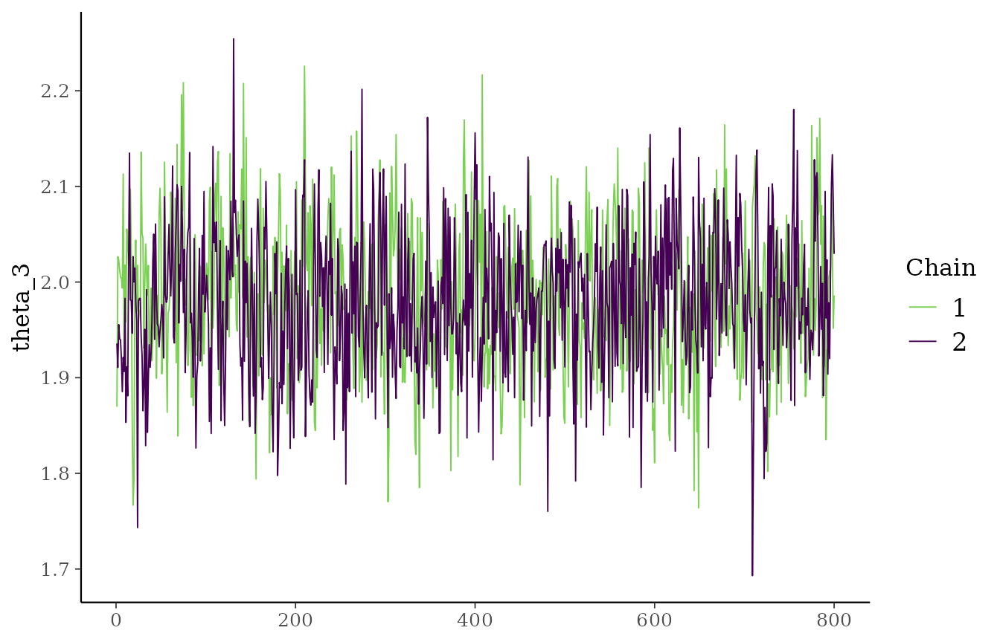
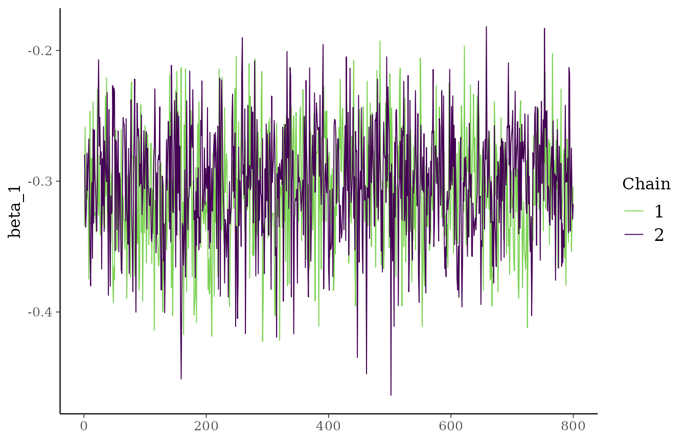
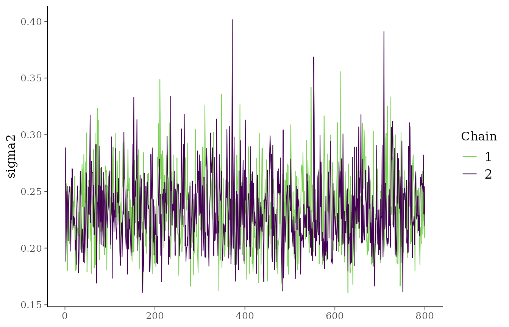
When parallel_chains = TRUE, all chains are evaluated
concurrently on background R sessions (through the future
framework) and the traceplots show all chains in the same panel for each
parameter.
With verbose = TRUE a live progress bar
(progressr) updates while the chains run, in both
sequential and parallel execution.
The fitted object stores the combined post-warmup draws from all
chains in one table. Because each chain contributes the same number of
post-warmup samples, the total number of rows is
ceiling((iter - warmup) / thin) * chains. The
thin argument keeps every thin-th post-warmup
draw (default 1, keep all), which reduces memory and
posterior autocorrelation without changing the sampler.
str(fit_formula$data)
#> List of 9
#> $ time : num [1:150] 3.34 3.33 2.47 4.28 2.42 ...
#> $ event : num [1:150] 1 1 1 1 1 1 1 1 1 1 ...
#> $ group : num [1:150] 1 1 1 1 1 1 1 1 1 1 ...
#> $ X : num [1:150, 1] 0.607 -1.147 -0.599 -1.656 0.824 ...
#> ..- attr(*, "dimnames")=List of 2
#> .. ..$ : NULL
#> .. ..$ : chr "age_std"
#> $ n : int 150
#> $ n_groups : num 3
#> $ n_covariates: int 1
#> $ cov_names : chr "age_std"
#> $ chain_seeds : int 979729617
plot(
fit_formula,
parameters = c("theta_1", "theta_2", "sigma2"),
ask = FALSE
)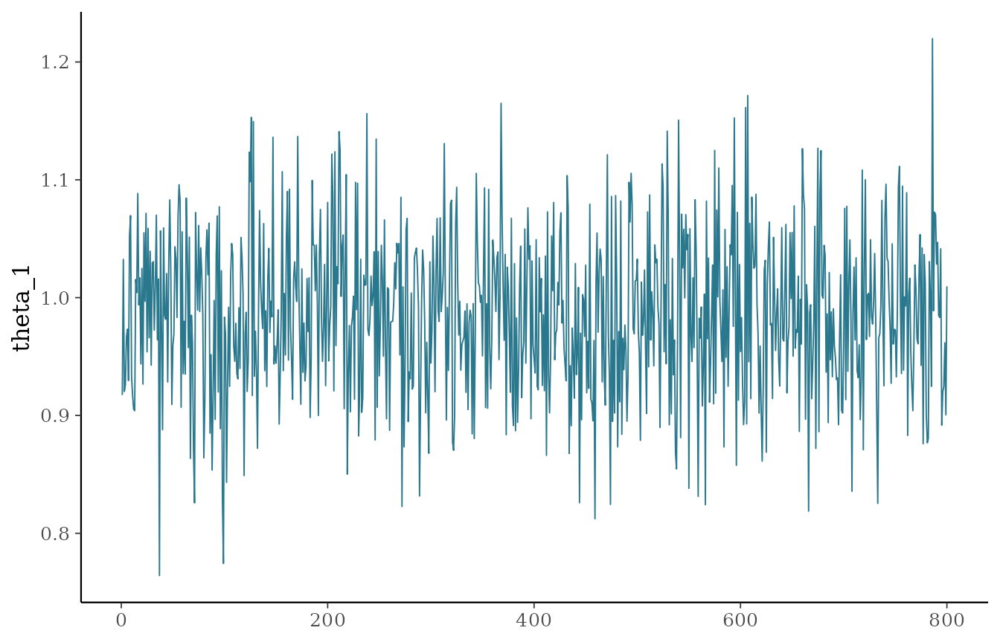
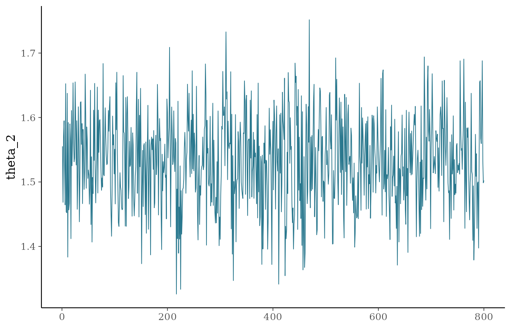
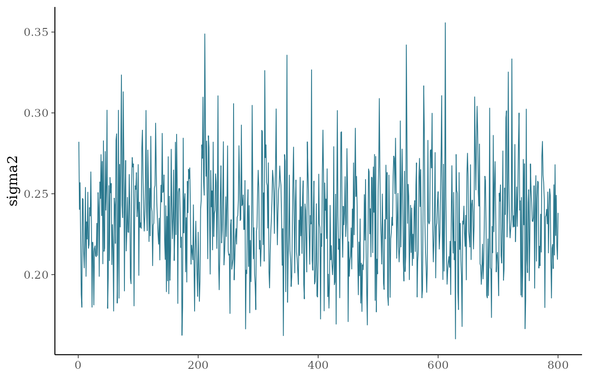
Fit the model with x and y
fit_xy <- pooling_surv(
x = sim_data[c("group", "age_std")],
y = Surv(sim_data$time, sim_data$event),
iter = 1200,
warmup = 400,
chains = 1,
seed = 6421
)
summary(fit_xy)
#> parameter mean sd q05 q50 q95 rhat
#> 1 theta_1 0.9861505 0.06849275 0.8788059 0.9862140 1.0958766 0.9993574
#> 2 theta_2 1.5326028 0.07082872 1.4121900 1.5318814 1.6524219 0.9990455
#> 3 theta_3 1.9841454 0.07555761 1.8632978 1.9833107 2.1082712 1.0055107
#> 4 beta_1 -0.3075793 0.04281121 -0.3797194 -0.3074616 -0.2362734 1.0084968
#> 5 sigma2 0.2347691 0.03216346 0.1856459 0.2331866 0.2883242 1.0003663
#> ess_bulk ess_tail
#> 1 768.5948 597.2774
#> 2 459.6751 582.4569
#> 3 451.6547 533.8496
#> 4 321.3371 497.4946
#> 5 553.2356 727.2810
all.equal(fit_formula$draws, fit_xy$draws)
#> [1] TRUEThis is useful if predictors and outcomes are prepared separately.
Fit a model without covariates
If the model only contains the subgroup variable, no
beta terms are estimated.
fit_no_cov <- pooling_surv(
Surv(time, event) ~ group,
data = sim_data,
iter = 1200,
warmup = 400,
chains = 1,
seed = 6421
)
summary(fit_no_cov)
#> parameter mean sd q05 q50 q95 rhat
#> 1 theta_1 0.9610428 0.07667525 0.8240873 0.9646688 1.0782239 0.9999338
#> 2 theta_2 1.5114113 0.08415282 1.3716898 1.5122529 1.6479938 1.0007384
#> 3 theta_3 1.9543858 0.08866337 1.8051221 1.9554501 2.0994038 0.9999588
#> 4 sigma2 0.3194790 0.04445914 0.2526799 0.3156426 0.4000848 1.0029710
#> ess_bulk ess_tail
#> 1 753.9749 762.1476
#> 2 651.1591 641.7757
#> 3 429.1694 610.9976
#> 4 452.9197 683.4747
plot(fit_no_cov, ask = FALSE)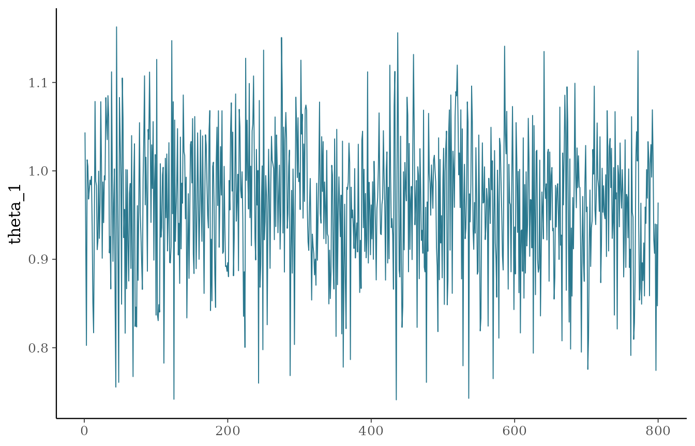
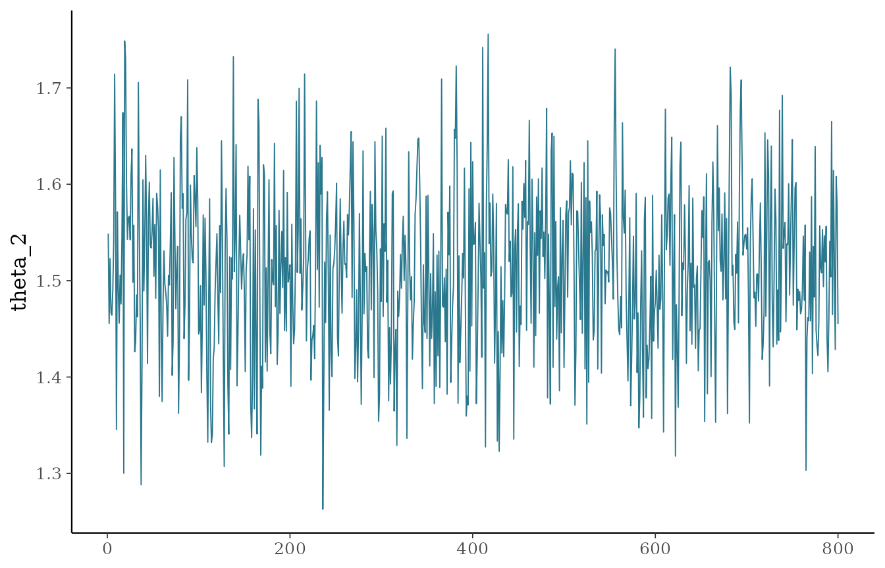
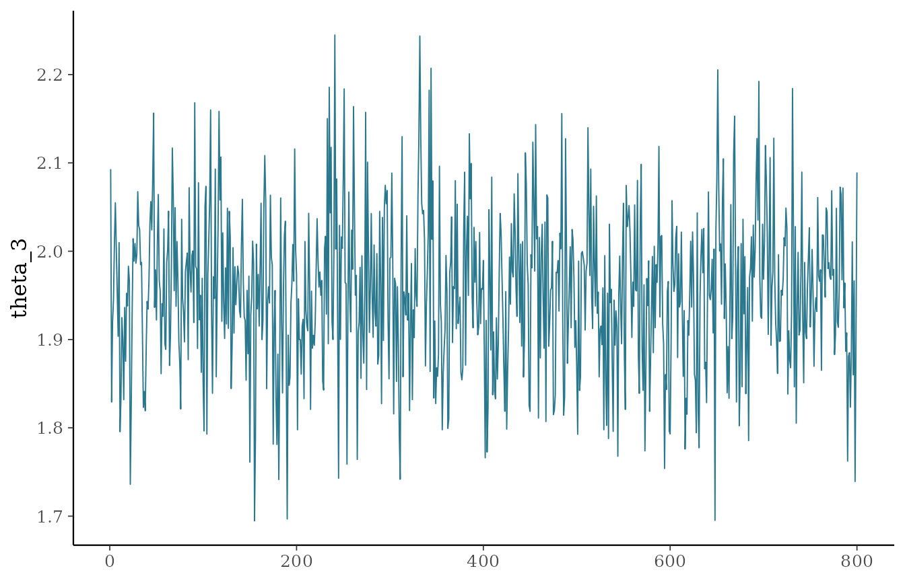
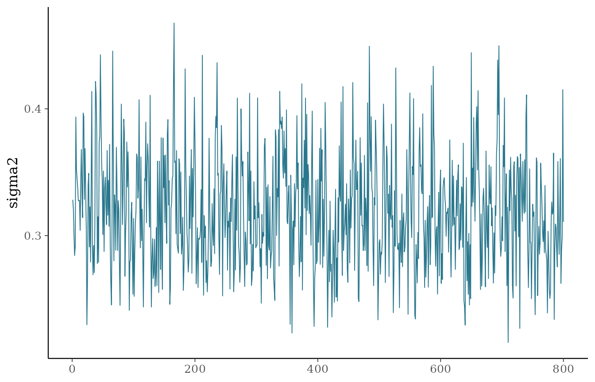
Basic posterior summaries
summary(fit_formula)
#> parameter mean sd q05 q50 q95 rhat
#> 1 theta_1 0.9861505 0.06849275 0.8788059 0.9862140 1.0958766 0.9993574
#> 2 theta_2 1.5326028 0.07082872 1.4121900 1.5318814 1.6524219 0.9990455
#> 3 theta_3 1.9841454 0.07555761 1.8632978 1.9833107 2.1082712 1.0055107
#> 4 beta_1 -0.3075793 0.04281121 -0.3797194 -0.3074616 -0.2362734 1.0084968
#> 5 sigma2 0.2347691 0.03216346 0.1856459 0.2331866 0.2883242 1.0003663
#> ess_bulk ess_tail
#> 1 768.5948 597.2774
#> 2 459.6751 582.4569
#> 3 451.6547 533.8496
#> 4 321.3371 497.4946
#> 5 553.2356 727.2810Inspecting the resolved priors
Whatever you pass to priors, the fitted object records
the exact hyperparameters the sampler used, with defaults merged into
the fields you did not supply. This is useful to confirm your
customization was applied and to reproduce a fit.
fit_formula$resolved_priors
#> $a_sigma
#> [1] 2
#>
#> $b_sigma
#> [1] 2
#>
#> $a_tau
#> [1] 2
#>
#> $b_tau
#> [1] 2
#>
#> $p_mix
#> [1] 0.5
#>
#> $m_mu
#> [1] 0
#>
#> $v_mu
#> [1] 10000
#>
#> $m_nex
#> [1] 0
#>
#> $v_nex
#> [1] 10000
#>
#> $v_beta
#> [1] 10000To customize a prior, pass a named list to priors; for
example, priors = list(p_mix = 0.7, a_tau = 3, b_tau = 3).
The fields p_mix, m_nex, and
v_nex also accept a vector of length equal to the number of
baskets, assigning one value per basket. See the vignette The EXNEX
Model, Priors, and Data Augmentation for the full list of
hyperparameters and how to set them.